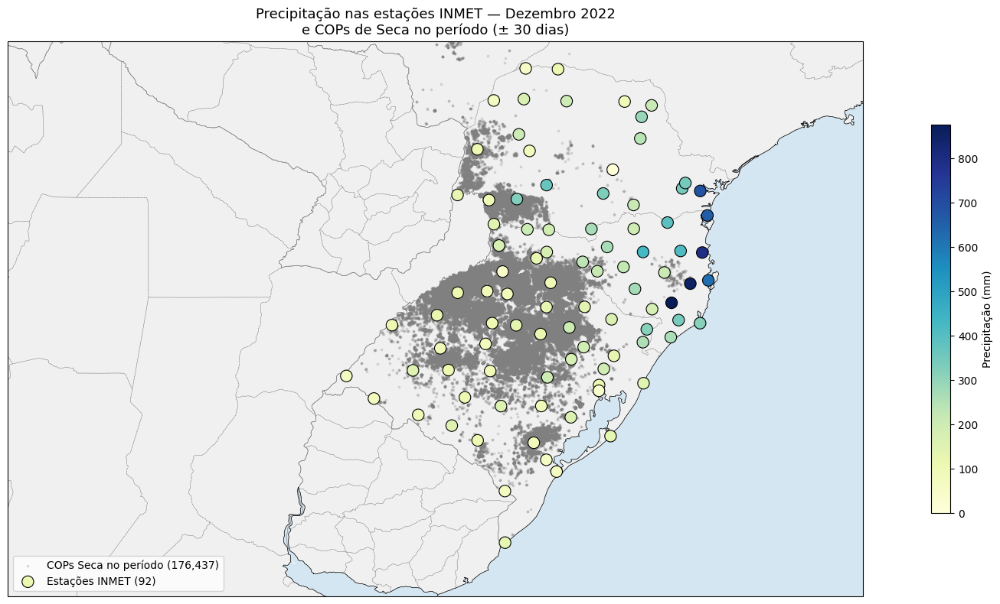
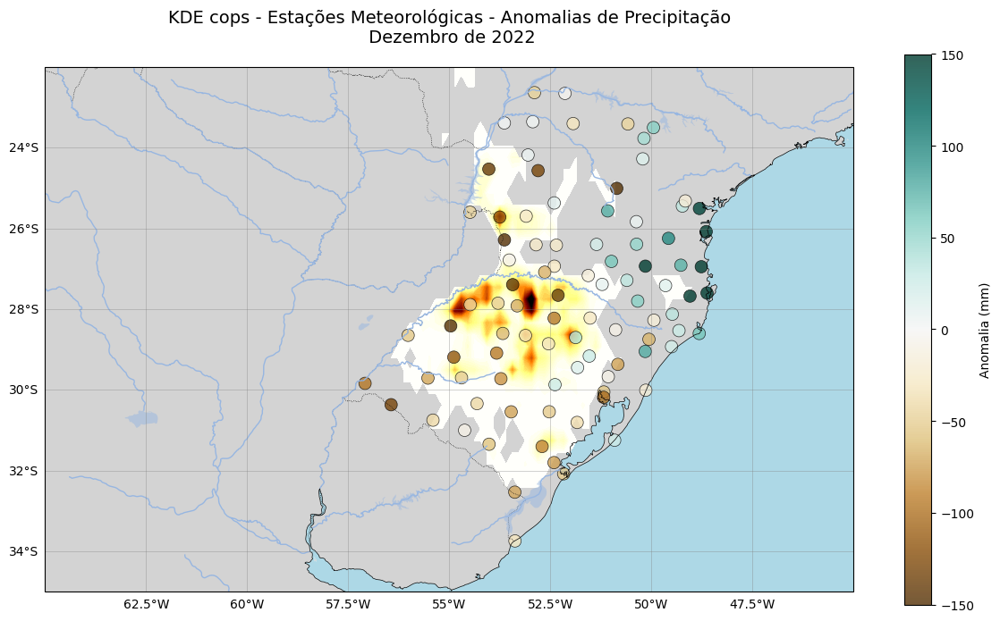
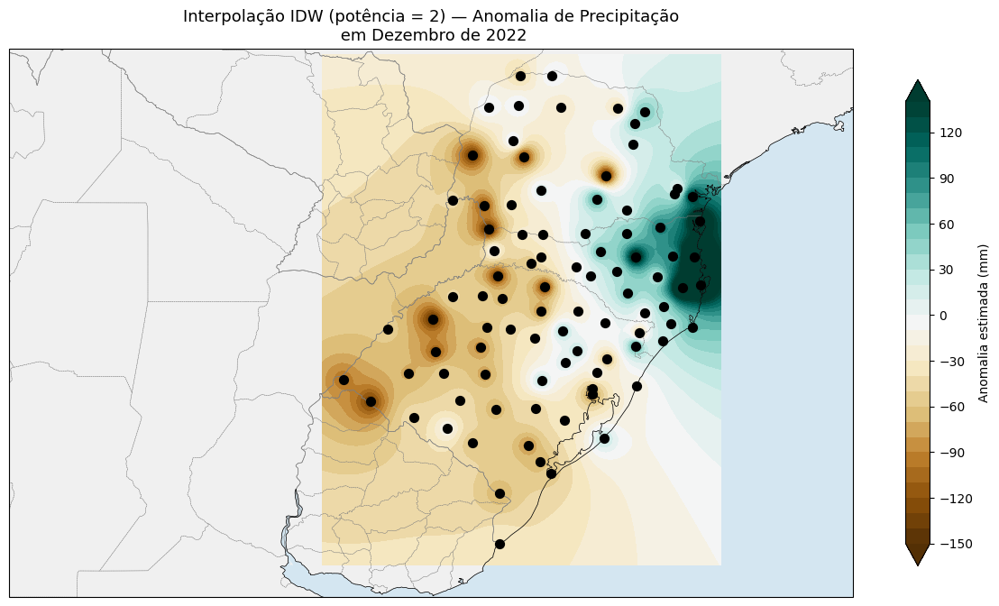
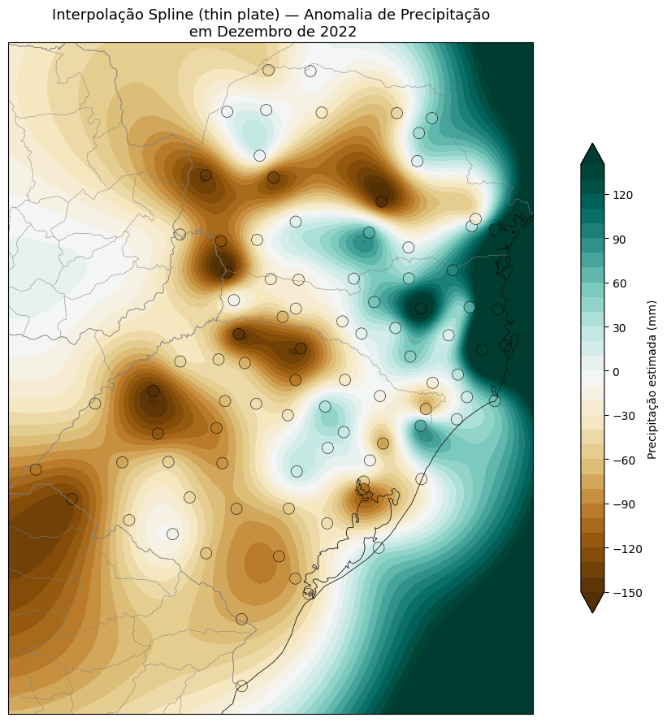
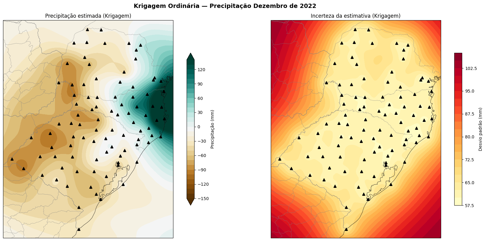
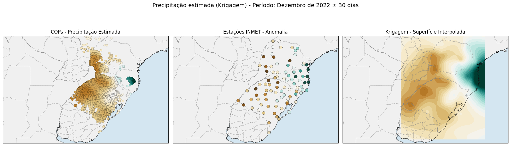

Bloco 3 — IDW, spline RBF e krigagem ordinária
Estações INMET são distribuídas de forma esparsa (~560 estações automáticas para todo o Brasil). Quando uma COP ocorre a 47 km da estação mais próxima — como o exemplo de Luís Eduardo Magalhães discutido em Técnicas de interpolação espacial aplicadas ao risco agrícola — não basta tomar o valor da estação isolada. Precisamos interpolar.
Três métodos clássicos para isso:
Método |
Ideia |
Forças |
|---|---|---|
IDW |
Peso proporcional a \(1/d^p\) |
Rápido, sem premissa estatística |
Spline RBF |
Função radial gaussiana |
Suavização forte, bom para mapas |
Krigagem Ordinária |
Estimador BLUE com semivariograma |
Modela a estrutura espacial; dá variância |
Dependências
pip install xarray geopandas pykrige scipy cartopy
Dados de entrada
Reaproveitamos o df_all da Aula prática 2 — Sicor + INMET: plausibilidade espacial e GDD da soja
(estações INMET com séries horárias) e o catálogo
coordenadas-inmet.csv. Para o exemplo, agregamos a precipitação
diária do mês de janeiro/2024:
import pandas as pd
import geopandas as gpd
import numpy as np
# Soma do mês por estação
df_prec_mes = (df_all.loc['2024-01-01':'2024-01-31', ['COD', 'PREC']]
.groupby('COD').sum()
.reset_index())
inmet_coords = pd.read_csv('coordenadas-inmet.csv',
header=0, names=['cod', 'latitude', 'longitude'])
df_prec_mes = df_prec_mes.merge(
inmet_coords, left_on='COD', right_on='cod',
)
Grade alvo (1° × 1° de margem em torno do RS):
lon = np.arange(-58, -49, 0.05)
lat = np.arange(-34, -27, 0.05)
LON, LAT = np.meshgrid(lon, lat)
1. IDW — inverse distance weighting
Cada ponto da grade recebe média ponderada das estações pelo inverso da distância à potência \(p\):
Implementação vetorizada:
from scipy.spatial.distance import cdist
pontos_est = df_prec_mes[['longitude', 'latitude']].values
pontos_grd = np.column_stack([LON.ravel(), LAT.ravel()])
valores = df_prec_mes['PREC'].values
d = cdist(pontos_grd, pontos_est)
d[d < 1e-9] = 1e-9
p = 2
w = 1 / d**p
z_idw = (w * valores).sum(axis=1) / w.sum(axis=1)
z_idw = z_idw.reshape(LON.shape)

Figura 51 - IDW com \(p=2\). Note os “bullseyes” — círculos concêntricos ao redor de cada estação, artefato característico do método.
Efeito da potência \(p\)

Figura 52 - IDW para \(p = 1, 2, 4\). Quanto maior \(p\), mais peso às estações próximas — extremo: \(p \to \infty\) reproduz o método do vizinho mais próximo.
2. spline RBF (radial basis function)
Função radial Gaussiana resolve o sistema linear:
com \(\phi(r) = \exp(-(\epsilon r)^2)\).
from scipy.interpolate import RBFInterpolator
rbf = RBFInterpolator(pontos_est, valores, kernel='gaussian', epsilon=0.5)
z_rbf = rbf(pontos_grd).reshape(LON.shape)

Figura 53 - Spline RBF Gaussiana. A superfície é suave (sem bullseyes), mas pode extrapolar para valores fora da amplitude observada — atenção em bordas com poucas estações.
3. krigagem ordinária (Pykrige)
A krigagem ajusta um semivariograma ao conjunto:
A função de melhor ajuste (esférica, exponencial ou gaussiana) é usada como peso ideal (BLUE — Best Linear Unbiased Estimator).
from pykrige.ok import OrdinaryKriging
ok = OrdinaryKriging(
pontos_est[:, 0], pontos_est[:, 1], valores,
variogram_model='spherical',
verbose=False, enable_plotting=False,
)
z_ok, var_ok = ok.execute('grid', lon, lat)
A krigagem retorna dois mapas: a estimativa e a variância estimada do erro — vantagem central sobre IDW e RBF.

Figura 54 - Semivariograma experimental (pontos) e modelo esférico ajustado (linha). O alcance (range) é a distância em que a correlação espacial se torna desprezível.

Figura 55 - Esquerda: estimativa krigada. Direita: variância estimada — alta nas bordas e em vazios da rede.
4. comparação visual lado a lado

Figura 56 - Painel comparativo IDW × Spline × Krigagem para o mesmo conjunto. Os três produzem padrões semelhantes em primeira ordem, mas IDW gera “bullseyes”, o spline suaviza demais e a krigagem entrega o melhor balanço com informação de erro.
5. diretriz prática para o curso
Matriz de decisão
IDW (p≈2) — quando precisa de uma estimativa rápida e o número de estações é < 30.
Spline RBF — quando o mapa será apresentado a stakeholders e o suavizado vale mais que a fidelidade local.
Krigagem Ordinária — quando o erro estimado importa (relatórios técnicos, decisões de campo) e há ≥ 30 estações bem distribuídas.
6. impacto sobre a precisão do seguro
A escolha do interpolador altera diretamente a precipitação estimada na gleba e, portanto, qualquer indicador derivado (déficit hídrico, dias secos consecutivos). Em sala mostramos que, para uma mesma COP em Luís Eduardo Magalhães:
IDW (p=2): 218 mm no ciclo;
RBF: 245 mm;
Krigagem: 232 mm ± 27 mm (1 σ).
A variância da krigagem é o melhor argumento para reportar à autoridade analítica — ela quantifica o quanto a estimativa é confiável.
Próximos passos
Técnicas de interpolação espacial aplicadas ao risco agrícola — fundamentos teóricos dos três métodos.
Aula 1 — plausibilidade meteorológica: seca em soja — uso de grade MERGE como alternativa à interpolação manual de estações.